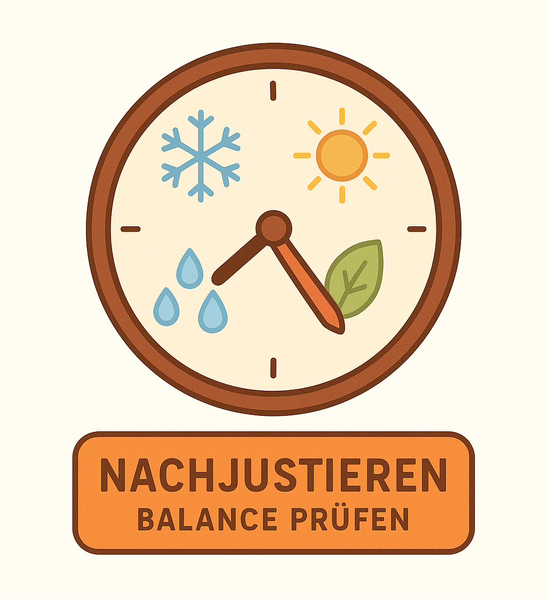

11 Wie Profis Portfolios bauen –intuitiv erklärt
11.1 Wie machen das die Profis eigentlich?
Wenn du „Vermögensverwalter/-in“ hörst, klingt das nach grauen Anzügen und komplizierten Tabellen. Doch in Wahrheit tun Profis nichts Geheimnisvolles: Sie arbeiten systematisch, nach Regeln, nicht nach Gefühl. Sie stellen sich immer eine Frage – und die kannst du dir auch stellen:
„Wie bringe ich Rendite und Sicherheit in eine vernünftige Balance?“
11.2 Das Portfolio wie ein Bauplan
Denk dein Vermögen wie ein Haus. Jede Anlageform ist ein Bauteil:
👉 Das Fundament = Sicheres (Geldmarkt, Anleihen …)
👉 Die Wände = stabile Aktien und ETFs ( Low Risk / Value )
👉 Das Dach = Wachstum und Trends ( Momentum, Growth )Ohne ein gutes Fundament fällt das Haus bei einem Sturm; ohne ein Dach verpasst du Sonne und Regen. Profis denken so bei jedem Kundenportfolio. Auch du kannst dieses Schema anwenden - nur in kleinem Maßstab.
11.3 Risiko und Rendite – eine Waage

Ein Portfolio ist wie eine Waage. Zu viel Risiko – die Waage kippt, du verlierst Schlaf. Zu wenig Risiko – die Waage bleibt stehen, dein Geld wächst nicht. Profis versuchen nicht, Risiko zu vermeiden, sondern es so zu dosieren, dass die Balance stimmt.
11.4 Die „Asset Allocation“ –ein schreckliches Wort, ein einfaches Prinzip
Asset Allocation heißt nur: Wie teile ich mein Geld auf verschiedene Töpfe auf? Das kann genauso einfach sein wie eine Ernährungspyramide.
👉 Oben (geringer Anteil): Chancen, Trends, Experimente.
👉 Mitte (mehr Platz): breite ETFs, klassische Aktien.
👉 Unten (Fundament): sichere Bausteine – Cash / Anleihen.Je mehr du Sport und Kaffee magst, desto mehr Explosivität - aber du brauchst immer Grundnahrung, damit du nicht zusammenbrichst. Genauso nähert sich ein Portfolio der optimalen Balance – Leistung und Ausdauer.
11.5 Wie viel Risiko passt zu dir?
Profis stellen die „Risikofähigkeit“ fest – nicht die „Risikofreude“. Das heißt: Was kannst du verkraften, ohne dein Ziel zu gefährden? Bei einer Studentin mit 30 Jahren bis zur Rente kann kurzfristige Schwankung verkraftbar sein. Bei jemandem, der in zehn Jahren ein Haus bauen will, vielleicht nicht. Ein Profi passt die Mischung also an die Zeit an – den „Zeithorizont“.
Beispiel:
👉 Langfristig (> 15 Jahre): 80 % Aktien, 20 % Anleihen.
👉 Mittelfristig (5–15 Jahre): 60 % Aktien, 40 % Anleihen.
👉 Kurzfristig (< 5 Jahre): mehr Cash und Festgeld.Du siehst: Nicht die Renditeerwartung steuert den Plan, sondern deine Lebenssituation.
11.6 Das Geheimnis ‚Risikopuffer‘
Profis wissen: Es macht mehr Sinn, vor einem Sturm einen Schirm in der Tasche zu haben als danach zu suchen. Darum bauen sie in jedes Portfolio einen Puffer ein - Cash‑Anteil, Anleihen, vielleicht Gold oder andere moderate Bausteine. Er reduziert nicht nur Verluste – er stärkt auch Nerven. Denn wer Puffer hat, handelt ruhig. Das ist die unsichtbare Kunst der Profis: nicht Reaktion, sondern Prävention.
11.7 Rebalancing – zurück zum Plan

Stell dir vor, du pflanzt einen Garten. Ein Teil wächst schneller (z. B. Aktien), ein Teil langsamer (z. B. Anleihen). Wenn du nicht hin und wieder zurückschneidest, überwuchert das Schnellwachsende alles. „Rebalancing“ bedeutet: einmal im Jahr prüfen, ob dein ursprünglicher Plan noch stimmt - und bei Bedarf nachjustieren. Profis machen das routinemäßig – nicht emotional.
11.8 Ein kleines Beispiel: Anna und ihr Portfolio
Anna, 25, hat über die letzten Kapitelseiten viel gelernt. Sie entscheidet sich für ein einfaches System:
👉 70 % ETF auf den Weltmarkt (Rendite‑Baustein)
👉 20 % Anleihen‑ETF (Stabilisator)
👉 10 % tägliches Konto (Notgroschen)Nach einem Jahr sind die Aktien gestiegen und machen jetzt 74 % aus. Beim Rebalancing verkauft sie ein bisschen und kauft Anleihen nach - zack, Balance wiederhergestellt. So handeln Profis – ruhig, regelmäßig, ohne Gefühlsdrama.
11.9 Wie Profis denken –Regeln statt Tipps
Viele Einsteiger/-innen suchen Tipps. Profis bauen Regeln. Ein Tipp hilft einmal. Eine Regel hilft immer. Beispiele für Profi‑Regeln:
👉 Ich investiere Monat für Monat.
👉 Ich rebalanciere 1× pro Jahr.
👉 Ich verkaufe nicht wegen Nachrichten.
👉 Ich prüfe mein Risikoniveau alle 2 Jahre.Mit solchen Regeln bist du automatisch ruhiger - und genau das tun Vermögensverwalter/-innen für ihre Kunden.
11.10 Das Geheimnis der Verteilung –„Nicht alles in eine Klasse“
Erinnerst du dich an die Eier‑im‑Korb‑Metapher aus Kapitel 5? Profis streuen nicht nur über Branchen, sondern auch über Risikoklassen. Ein Beispiel für eine typische Struktur:
👉 Anleihen / Kasse = Stabilität
👉 Aktien = Wachstum
👉 Immobilien / Alternative = DiversifikationSo entsteht ein Gleichgewicht, das fast jeder Marktphase standhält. Das nennt man Portfoliokonstruktion –aber du kannst es einfach „Durchmischung“ nennen.
11.11 Psychologie –der unsichtbare Hebel
Profis lernen nicht nur über Zahlen, sondern über Menschen. Sie wissen: Das größte Risiko kommt nicht vom Markt, sondern von unseren eigenen Reaktionen. Ein Portfolio, das zu dir passt, verhindert Panik‑Handlungen. Darum baut jede(r) Profi auch eine emotionale Ebene ein: Portfolios, die Eigner/-innen verstehen, werden seltener geändert. Wenn du deinen Plan verstehst, vertraust du ihm – und das ist der wahre Vorsprung.
11.12 Ziel‑basierte Portfolios
Profis definieren immer ein Ziel, bevor sie investieren:
👉 Bildung? – mittelfristig 5 – 10 Jahre.
👉 Eigene Wohnung? – 10 – 15 Jahre.
👉 Ruhestand? – 20 – 40 Jahre.Dann wird das Portfolio darauf abgestimmt. So fühlen sich die Geldentscheidungen nicht abstrakt an, sondern lebensnah –für genau deinen Weg.
11.13 Wie Profis mit Krisen umgehen
Wenn die Börsen fallen, handeln Profi‑Portfolios nach Plan, nicht nach Panik. Sie nutzen Rebalancing –verkaufen ein bisschen vom Gestiegenen, kaufen vom Gefallenen. Damit erhält man den ursprünglichen Mix und nutzt billigere Preise. So kann eine Krise zur Chance werden – und das fühlt sich erstaunlich ruhig an.
11.14 Ein Portfolio ist wie ein Garten
Vorher haben wir Low Risk mit Schildkröten verglichen, Momentum mit Surfen und Value mit Flohmärkten. Ein Portfolio ist wie ein Garten: Unterschiedliche Pflanzen, verschiedene Pflege. Man gießt, schneidet, beobachtet. Einmal gepflanzt allein reicht nicht, aber zu viel daran zerren schadet ebenfalls. Regelmäßige, ruhige Pflege bringt die beste Ernte – genau so planen Profis.
11.15 Kleine Fallstudie – Ben und Marie
- Ben, 24, Tech‑Fan, mag Risiko.
- Marie, 28, meditativ und ruhig, hasst Überraschungen.
Beide können professionell investieren – aber ihre Portfolios sehen anders aus.
Ben: 80 % Aktien (inkl. Momentum/ Growth), 20 % Sicherheit. Marie: 50 % Aktien (davon 30 % Low Risk/ Value), 30 % Anleihen, 20 % Cash.
Beide haben eine Strategie, die zu ihnen passt - und das ist der entscheidende Profi‑Trick: Nicht Kopie, sondern individuelle Balance.
11.16 Was Profis nicht tun
👉 Sie versuchen nicht, den perfekten Zeitpunkt zu raten.
👉 Sie wechseln nicht ständig ihre Bausteine.
👉 Sie ignorieren keine Gefühle, aber lassen sie nicht entscheiden.
👉 Sie wissen: „Der Plan ist wichtiger als die Prognose.“ Wenn du diese vier Punkte erkennst und anwendest, bist du auf einem professionellen Pfad.
11.17 Dein erster Portfolio‑Plan –Mini‑Leitfaden
1️⃣ Ziel festlegen: Was willst du finanzieren? (z. B. Freiheit, Reisen, Altersvorsorge)
2️⃣ Zeit schätzen: Wie lange darf das Geld arbeiten?
3️⃣ Mischung bestimmen: z. B. 70/30 = Aktien/Anleihen.
4️⃣ Sparrate festlegen: besser regelmäßig 50 € monatlich als unregelmäßig 500 €.
5️⃣ Auf Automatik stellen: per Sparplan, rebalancieren 1× Jahr.
Das war’s. Mehr braucht es nicht, um wie ein Profi zu starten.
11.18 Die Kunst des Nichtstuns
Profis tun viel am Anfang – und dann oft jahrelang nichts. Ihr größter Vorteil ist Geduld. Ein Portfolio braucht Zeit und Ruhe, um zu wachsen, wie Teig, der gehen muss. Je weniger du daran herumdokterst, desto besser wird das Ergebnis.
11.19 Was du aus diesem Kapitel mitnehmen solltest
👉 Profis balancieren Risiko und Rendite – nicht gefühlsmäßig, sondern planmäßig.
👉 Asset Allocation = Verteilung – nicht Fachwort für Eliten.
👉 Rebalancing = Gelegenheit zur Pflege deiner Finanzen.
👉 Das beste Portfolio ist das, das du verstehst und durchhältst.
👉 Krisen gehören dazu – mit Plan wirst du ruhig bleiben.
👉 Ein Profi bist du, wenn du deinen Plan liebst, nicht, wenn du Zahlen auswendig kennst.11.20 Zum Nachdenken
„Disziplin schlägt Genie – immer.“ – unbekannter Vermögensverwalter
Planen, bleiben, balancieren. Das sind nicht nur Finanzprinzipien, sondern Lebensprinzipien.
11.21 Ausblick
Im nächsten Teil beginnt dein praktischer Weg: Du baust dein eigenes Portfolio Schritt für Schritt - mit Zielen, Mischungen und konkreten Beispielen (100 €, 500 €, 1 000 € pro Monat). Du wirst sehen – die Theorie ist jetzt leicht, weil du die Ideen verstanden hast - und ab jetzt geht es um deinen persönlichen Plan.